Photography
A world-building eye. I photograph the small terrains most people walk across: the way water draws on sand, how grass remembers wind, the marks people leave on shared ground. These studies feed straight back into how I think about texture, pace and space in my design work.
Series one
Textures
Pixel phone, black and white · December 2025
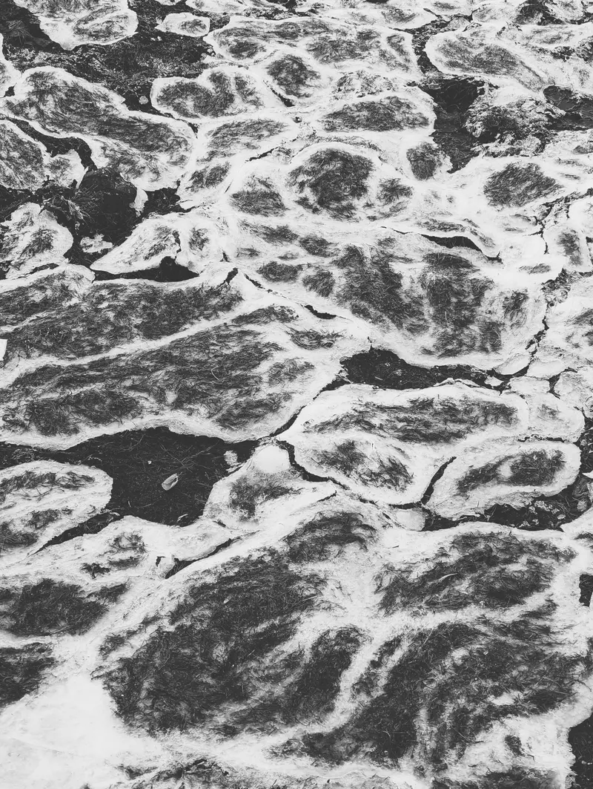
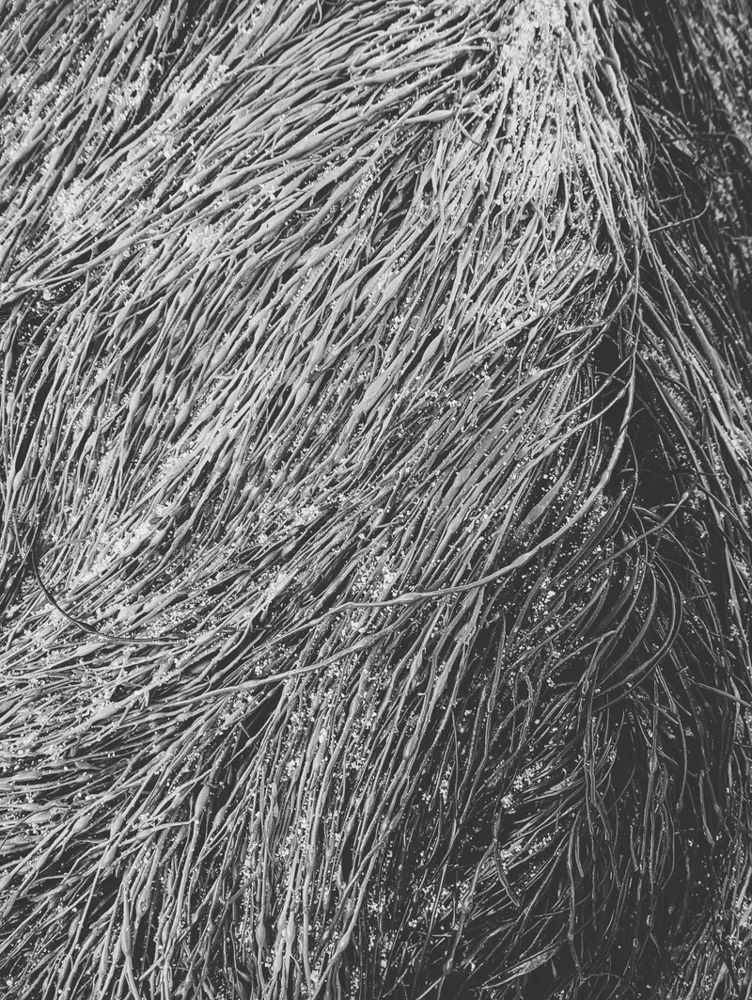
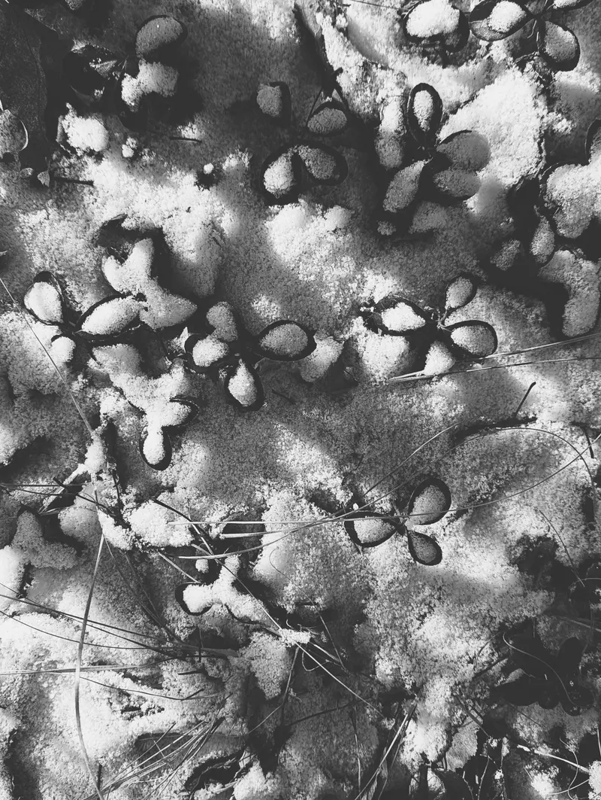
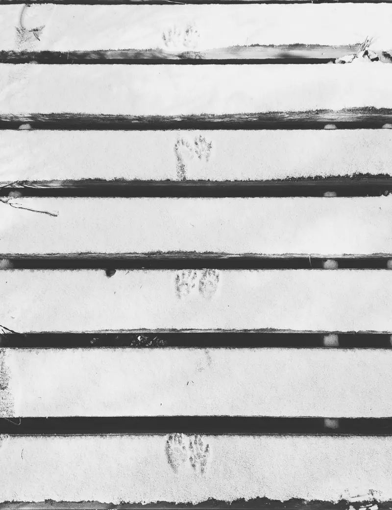
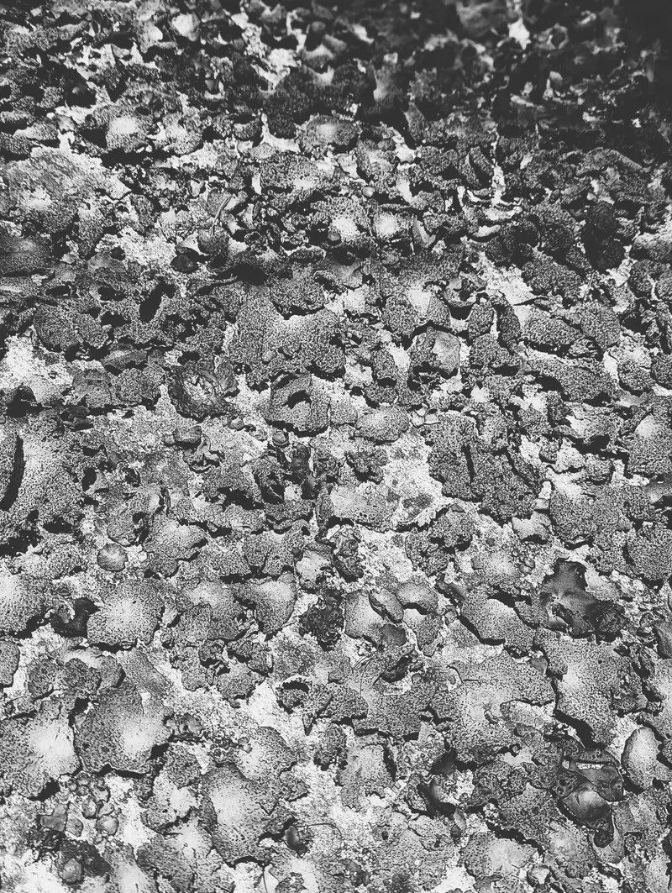
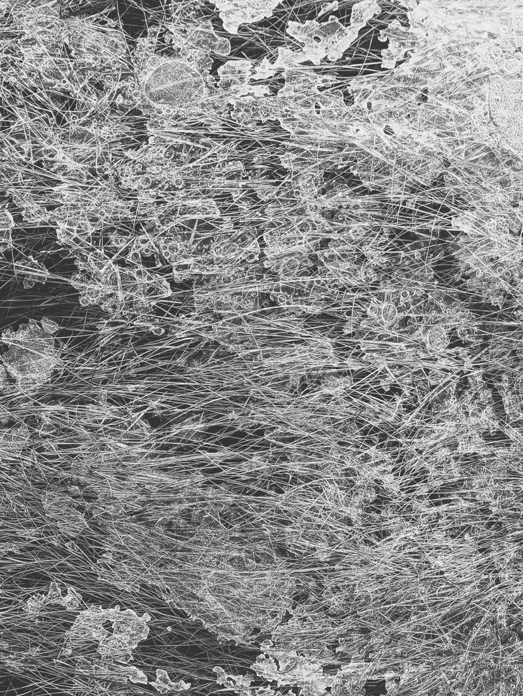
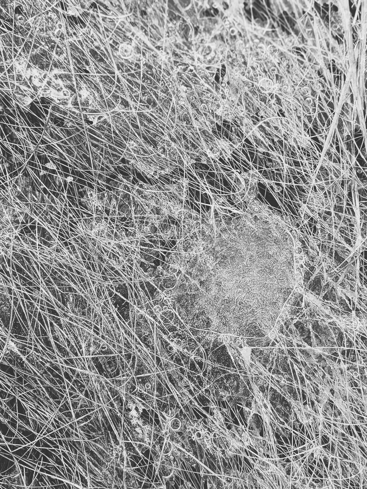
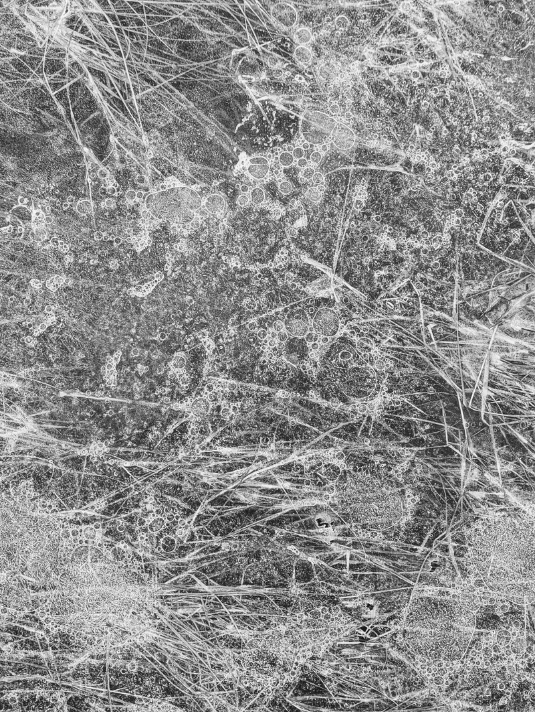
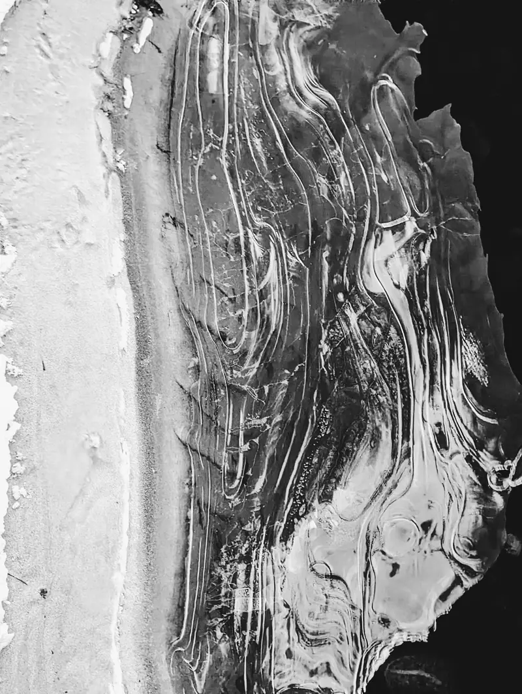
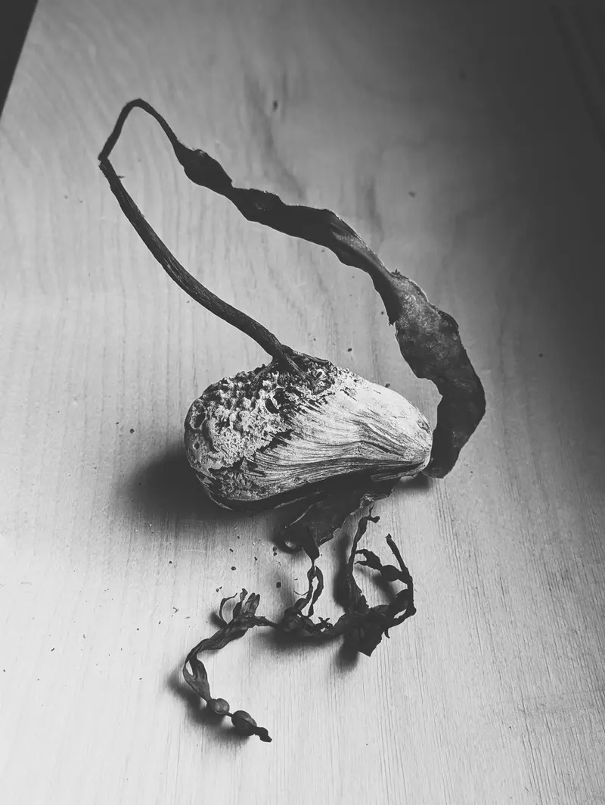

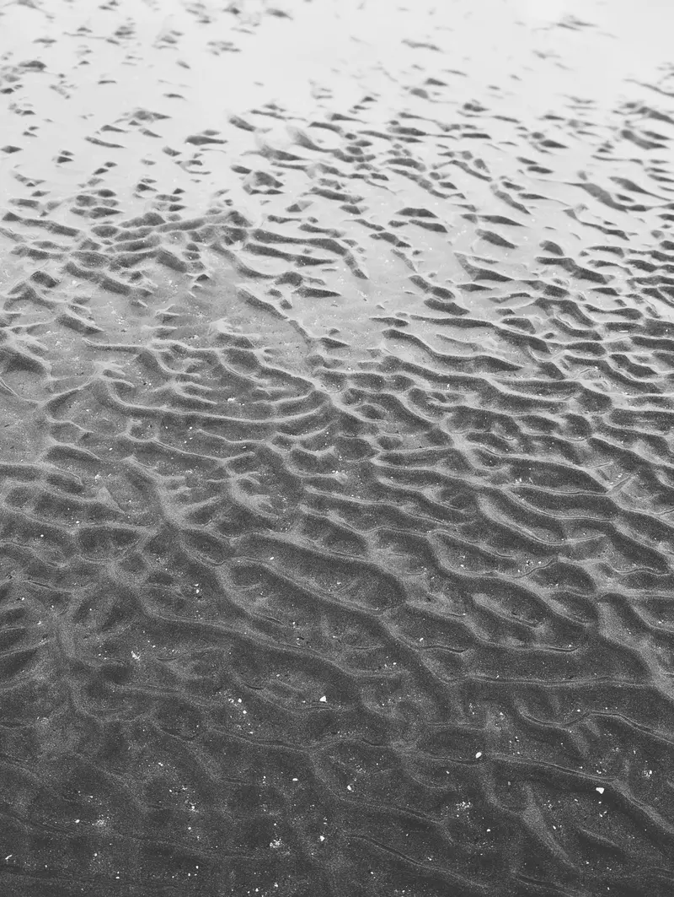